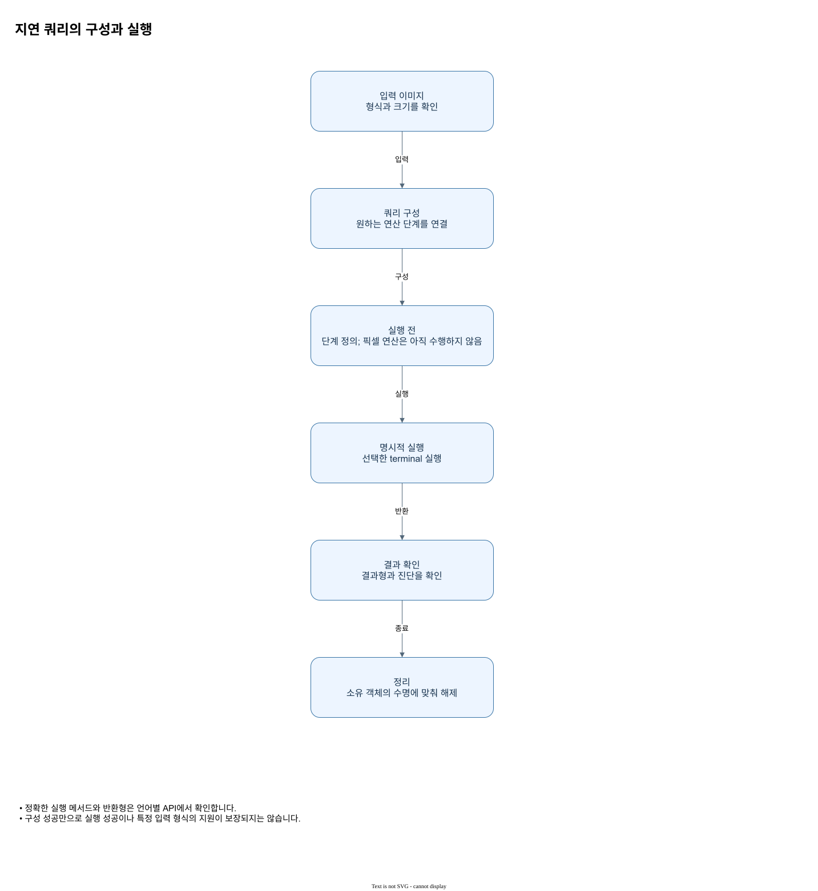

지연 쿼리의 구성과 실행
단계를 정의하고 명시적인 실행에서 결과를 얻습니다.


그림을 읽는 순서
- 정확한 실행 메서드와 반환형은 언어별 API에서 확인합니다.
- 구성 성공만으로 실행 성공이나 특정 입력 형식의 지원이 보장되지는 않습니다.
입력과 결과의 의미
ZImage 의 직접 이미지 변환은 호출 즉시 계산하지만, ImageQuery 는 실행할 작업을 축적합니다. query() 가 입력 이미지 저장소를 공유하며 threshold() 등의 연산을 추가해도, 실제 픽셀 처리는 execute() 에서 발생합니다.
연산 계획과 실행을 구분한다 · ImageQuery · 지연 실행에서 설정과 실제 API를 이어서 확인할 수 있습니다.
C# 이미지 계획의 Threshold/Capture 등은 기존 빌더를 바꿔 같은 객체를 반환합니다. 별칭은 같은 계획이고 분기는 Clone()이 필요합니다. 변경 실패 시 기존 계획은 유지됩니다. Rust의 변환은 self 를 소비하므로 사용한 이전 변수는 다시 쓸 수 없고 분기에는 미리 clone합니다. Execute는 지연 계획을 실행하며 결과 종류는 터미널에 따릅니다. 캡처하지 않은 이름을 요청하면 오류입니다.
형식별 Execute와 출력 · ImageQuery · 지연 실행에서 설정과 실제 API를 이어서 확인할 수 있습니다.
적용할 때 확인할 점
단계를 정의하고 명시적인 실행에서 결과를 얻습니다. 그림의 화살표는 여기에서 설명하는 데이터 또는 제어 관계를 나타냅니다. 실제 호출에서 사용할 수 있는 입력 형식과 반환 객체는 연결된 API 문서의 선언과 파라미터 표를 확인하세요.